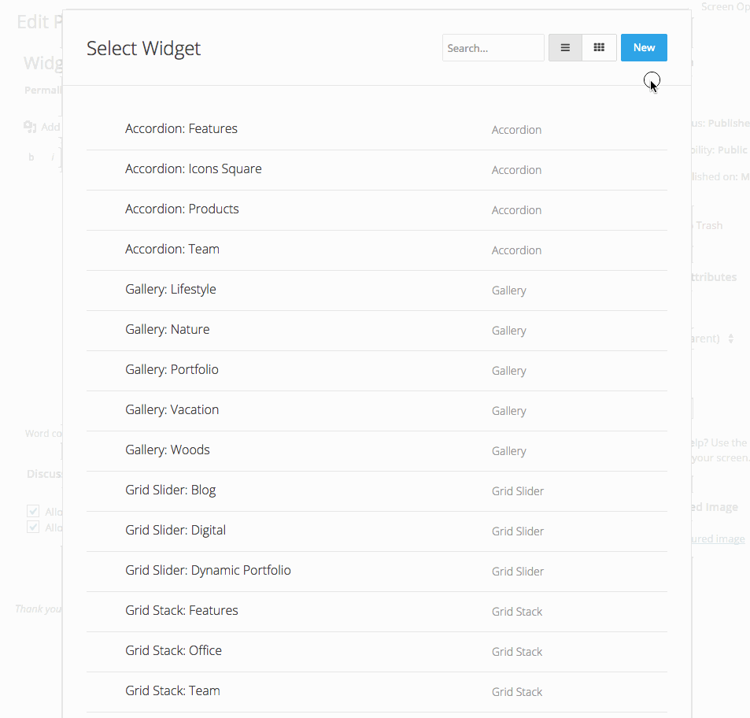

Creating Widgets
In this tutorial you'll learn how to create widgets and get an insight of the general structure of Widgetkit.
In the CMS editor
- Inside the editor of your CMS hit the Widgetkit button. This will open Widgetkit in a lightbox.
- Insert one of the already existing widgets from the list by clicking inside the widget title or hit the New button to create a new widget. You can also edit, duplicate or delete single widgets by clicking the icons that appear on the right hand side when hovering an item.
- Choose the content type and pick the widget you want to be rendered. For moree information, take a look at the {doc:widget-plugins text:Widget Plugins} doc. Afterwards hit Create to proceed.
- Enter a name for your widget and add your content and start adding your content. For mor information, check out the {doc:widget-content text:Widget Content} doc. In the Settings panel you can change the configurations of the widget plugin, like animations and display options or add a custom class to your widget. To change the content type or widget plugin click on the gear icon.
- Hit Save to finalize your widget. Then hit Cancel and you will be taken back to the list of widgets, where your newly created widget will appear. Click inside the widget title to insert the shortcode into your content.
Visual Guide: Insert existing Widget

Visual Guide: Create and insert a new Widget

WordPress widget or Joomla module
Widgetkit also provides a WordPress Widget or Joomla module. Just go to Appearance » Widgets and drag and drop the Widgetkit widget to any theme position. In Joomla create a new Module in the Module Manager and select Widgetkit as the Module Type. The editor will then display a Select Widget button which opens the Widgetkit dialog.
Shortcodes
Shortcodes are a very popular concept from Wordpress which allows you to easily publish dynamic content without any programming knowledge. Basically you insert a shortcode in a WordPress post or Joomla article and it will be rendered as a widget, for example a slideshow which loads dynamic content from your CMS.
All shortcodes include the id and the title of the widget that you want to display.
[widgetkit id="1" name="My Slideshow"]
If you want to edit your widget afterwards, you need to click inside the shortcode before hitting the Widgetkit button. Otherwise you can only create a new widget.